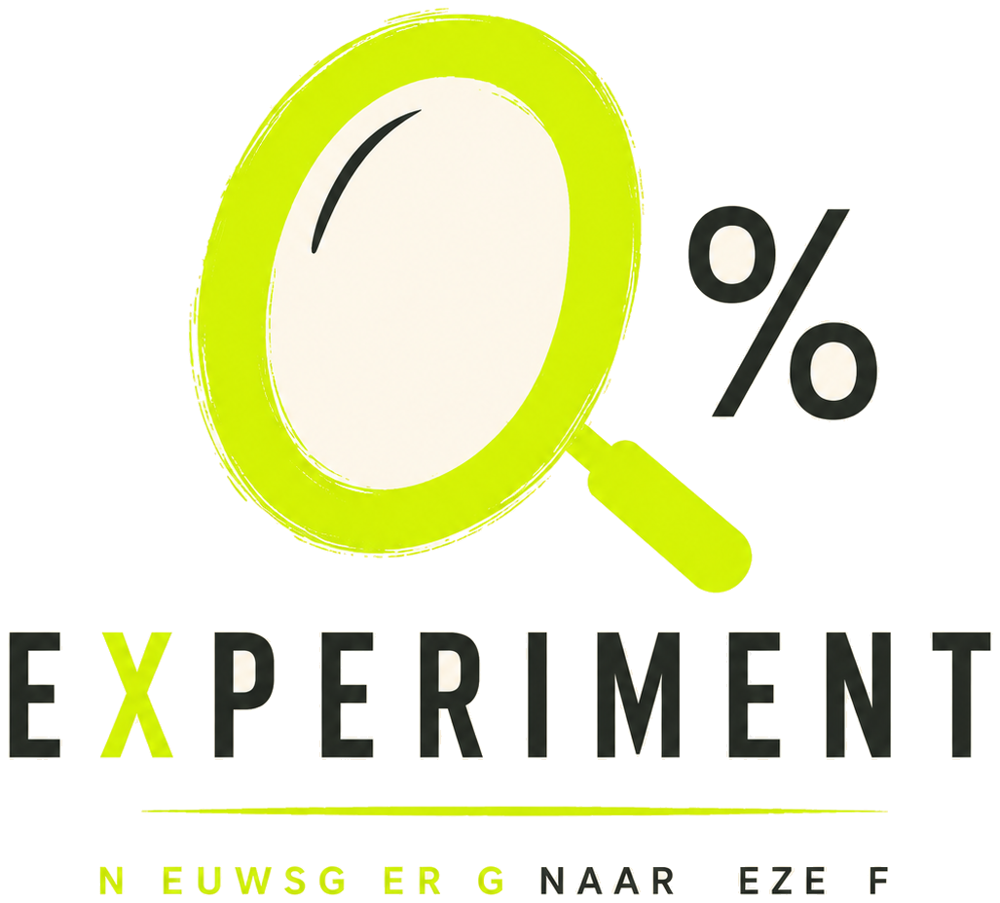

Intern · designsysteem v1.0
Nieuwsgierig naar jezelf.
Dit is het levende designsysteem van 0% Experiment, afgeleid uit het brandbook. Alles
wat je hier ziet komt uit dezelfde tokens en stylesheets als de echte site: verander
een token in assets/css/tokens.css en deze pagina verandert mee.
01 · Kleur
Crème domineert. Antraciet geeft structuur. Fluogroen werkt als een markeerstift en niet als standaard achtergrond voor volledige pagina's. Petrol ondersteunt en mag niet concurreren met het fluogroen.
Verhouding op een pagina
Richtlijn: ongeveer 70% crème, 20% antraciet of petrol, 10% fluogroen. Gebruik dit als gevoelsmaat, niet als rekenregel.
Contrast
02 · Typografie
Sora voor titels, statements, buttons en uitgesproken merkmomenten. Inter voor langere teksten, formulieren, FAQ's en checkoutinformatie. Hoofdletters alleen voor korte labels, nooit voor lange teksten.
Nieuwsgierig naar jezelf.
Nieuwsgierig naar jezelf.
Nieuwsgierig naar jezelf.
Nieuwsgierig naar jezelf.
30 dagen lang halen we alcohol uit de vergelijking. En dan gaan we kijken.
Dit werkboek gaat over wat je in die 30 dagen kunt opmerken als je eindelijk begint te kijken. Naar je automatische gewoontes. Naar je lichaam. Naar je gedachten.
30 dagen · één variabele · jij
03 · Ruimte & raster
"Veel ademruimte en sterk contrast." Secties ademen; leestekst blijft smal genoeg om comfortabel te lezen.
--space-section- Verticale sectiepadding · 4,5rem → 9rem
--space-block- Tussen blokken · 2rem → 3,5rem
--space-gutter- Zijmarge pagina · 1,25rem → 2,5rem
--container-reading- 42rem · lange tekst nooit breder
--container-content- 64rem · standaard inhoud
--container-wide- 80rem · volledige lay-out
04 · Logo
Het vergrootglas dat uit de 0 ontstaat is het centrale merkelement. Gebruik het volledige logo op belangrijke merkmomenten; de 0% met vergrootglas mag zelfstandig als icoon.

Lockup · assets/img/brand/logo-lockup.png
Mark · assets/img/brand/logo-mark.png
Niet doen
- Uitrekken of roteren.
- Willekeurig herkleuren.
- Van schaduwen voorzien.
- Op drukke fotografie plaatsen.
- Te weinig vrije ruimte laten.
05 · Grafische taal
Cirkels, uitsneden, onderlijningen, gemarkeerde woorden en uitvergrote details, het vergrootglas groeit door tot een terugkerende visuele taal.
Een gemarkeerd woord.
.u-mark
Een langere passage markeren.
.u-mark--soft
Een onderlijnd woord.
.u-underline
Een omcirkeld woord.
.u-circled
30
.u-figure
.u-rule
Wel
- Veel ademruimte en sterk contrast.
- Fluogroen als bewuste visuele onderbreking.
- Editorial combineren met speelse imperfectie.
- Het 0%-symbool laten terugkomen als herkenningspunt.
Niet
- Elke sectie fluogroen maken.
- Cliché alcoholbeelden als standaard gebruiken.
- Medische of therapeutische uitstraling.
- Zachte pastel-wellnessesthetiek.
06 · Componenten
Buttons
Primair is altijd fluogroen met antraciete tekst. Eén primaire actie per scherm.
Kaarten en tags
Kaart
Een blok inhoud
Subtiele rand, lichte crème, kleine radius. Editorial, niet bubbelig.
Interactieve kaart
Beweeg hierover
Licht omhoog, zachte schaduw.
Tags
Vragenlijst
Het kernpatroon van dit merk: één vraag per regel, ruimte ertussen.
- Wat gebeurt er met je slaap?
- Je energie?
- Je vrijdagavond?
Formuliervelden
Helptekst staat in Inter en is bewust rustig.
Accordion
Het antwoord staat in Inter, want dit is functionele leestekst.
De cirkel met het plusteken is de knipoog naar het vergrootglas.
Advertentieblok
Gebruikt op de mocktailpagina. Altijd duidelijk gelabeld, dit merk doet niet stiekem.
07 · Tone of voice
0% Experiment spreekt als een uitnodiging, niet als een instructie. Korte zinnen. Sterke vragen. Heldere dagelijkse taal. Direct en geestig mag, belerend niet.
Zo klinkt het
- "Wat gebeurt er als je 30 dagen niet drinkt?"
- "Geen belofte. Wel een experiment."
- "30 dagen. Eén vraag: wat merk jij?"
- "Nieuwsgierig naar jezelf?"
Zo niet
- Moraliserende taal en angstcommunicatie.
- Overdreven gezondheidsclaims.
- Schaamte en schuld.
- Klinken als een detoxprogramma of een les over gezond leven.
08 · Checklist voor designers
Loop dit na bij elk ontwerp voor je het oplevert.
- Maakt dit nieuwsgierig?
- Blijft crème de visuele basis?
- Wordt fluogroen bewust en gedoseerd gebruikt?
- Voelt de typografie hedendaags en editoriaal?
- Komt het idee van onderzoeken of uitvergroten terug?
- Vermijden we medische, belerende en generieke wellnesscodes?
- Is de primaire actie onmiddellijk duidelijk?
- Behoudt mobiel dezelfde merkenergie?
- Voelt het ene digitale product waardevol en tastbaar?
- Is dit nog herkenbaar als 0% Experiment wanneer het logo even niet zichtbaar is?
0%
Nieuwsgierig naar jezelf.
Merkkleuren: #F5F1E8 · #1D1D1D · #D7FF00 · #173C46